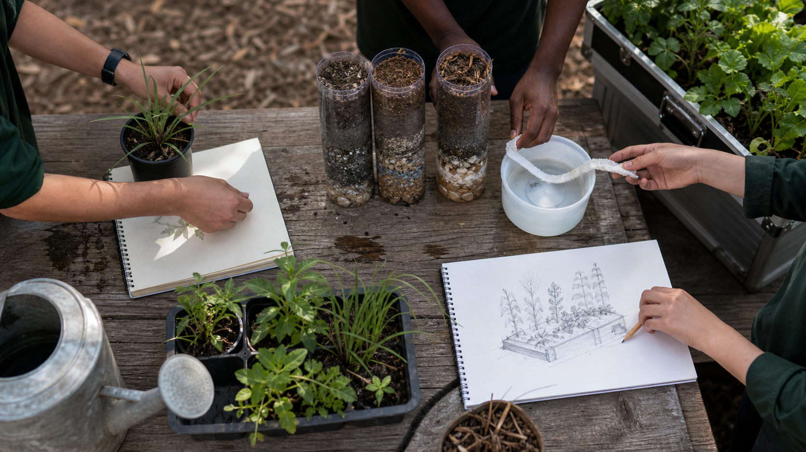

What these records are
They are formative practice: a place to test an idea, record an observation and make a reasoned decision before selecting project evidence.
Applied learning
Ten purposeful ways to practise the agriculture, evidence and design thinking used in Farm in a Box.

One activity per module
Each activity rehearses a named module idea before you choose the strongest evidence for your folio. Open only the activity you need; the bank does not expand everything at once.
0 of 10 started · 0 marked ready for your folio review
They are formative practice: a place to test an idea, record an observation and make a reasoned decision before selecting project evidence.
Saving, printing or exporting an activity does not submit it, give it a mark, prove teacher observation or make it formal assessment.